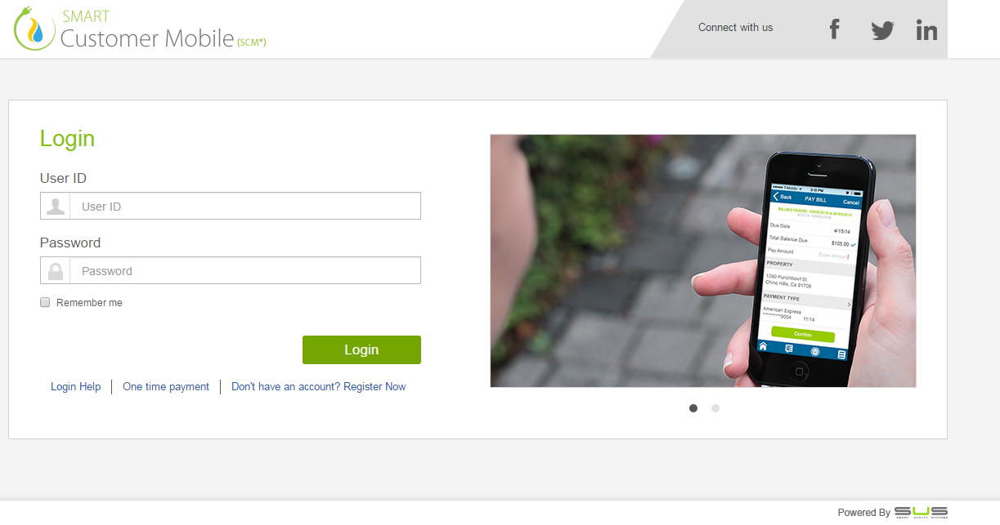
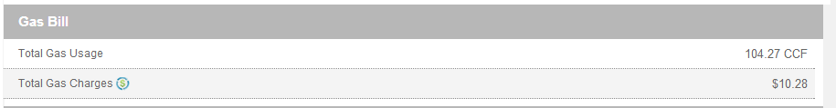
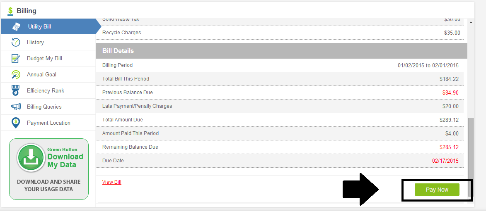

Smart Customer Portal (SCP™) is an intelligent platform designed to offer utility customers convenience and control to access their data anytime, anywhere and on any device (phone, tablet, computer) all while keeping things simple and user friendly. It offers twelve efficient modules to promote self-service and achieve the following energy management objectives below and much more:
- Easy online bill payment
- Access to near real time energy usage information
- Self-service to update profile information such as email and phone numbers
- Convenient service requests
- Ability to send messages such as reporting an outage, billing questions, etc.
- Access to EV charging stations
View and edit customer profile information and link to payment
Ability to view current & historical bills, pay bill online, set budget goals and see efficiency ranking
Graphs and charts illustrating consumption, historical comparisons and current rates
Allows real time 2-way communication between customer & utility via messages such as outage updates, service requests, and billing notifications
Displays current and planned outages & provides ability for customers to report outages directly from their mobile devices
Allows utility customers the ability to determine and set usage goals and provides consumption comparisons
Provides social network connectivity and the ability to send messages directly to utility
Ability to enter and log customer service requests, including turn on/off and other service related issues
Ability to view and enroll in programs, rebates, and savings tips
Ability to manage and control home appliances and devices
Provides charging information and locations, rates and charging options
Reduce peak load from Residential and C&I Customers through DR events and programs.
This section will provide the user to: • Register a new account • Log in to Smart Customer Mobile (SCM®) application The first screen that appears on the web browser is as follow:
- Register a new account
- Log in to Smart Customer Mobile (SCM®) application
- Recover a forgotten password
- Get Login help for the following issues:
- Forgotten Password
- Forgotten User ID
- Other Sign In issues
- Make One Time Payment

Click on the hyperlink ‘Don’t have an account? Register now’ to register a new account to get access to the product:
Following screen will appear once clicked on ‘Don’t have an account? Register now’ hyperlink:
Provide the required information and click ‘NEXT’ to proceed to the next step of registration:
- Last 4 digit of SSN
- Account Number
- Zip Code
- Email ID
Once clicked ‘NEXT’, the following screen shall appear. Provide the mandatory information and click ‘REGISTER’ to successfully register an account:
- First Name
- Last Name
- Mobile Number- 10 digit valid mobile number
- User ID
- Password- should meet the password criteria
- 8 characters minimum up to max of 24F
- Must contain one capital letter
- Must contain one numeric
- Must contain one special character (*, &, @, etc)
- Confirm Password
- Captcha
- Address
- City
- Security Question 1
- Security Answer 1
- Security Question 2
- Security Answer 2
Once the above mentioned information has been submitted, an automatically generated email will be sent to the user’s email address to create a password for completion of the registration process.
User can click the link provided in the email and submit the information given below:
- New Password : Provide a password that fulfils the following criteria:
- 8 characters minimum up to max of 24
- Must contain one capital letter
- Must contain one numeric
- Must contain one special character (*, &, @, etc)
- Confirm the new password.
Note: Click ‘Help’ hyperlink on Registration page to view the help document of Smart Customer Mobile Application. This document provides information on how to use the application.
Enter the User ID and Password which was generated using the ‘Don’t have an account? Register now’ option and press LOGIN:
Note: Users can select ‘Remember Me’ checkbox to enable the web browser to remember the entered User ID and Password for login convenience in the future.
Upon successful login, Users will see the “About My Home” screen display. The information requested will help utility provide better analysis and advice to its users in the future.
In‘About My Home’ screen users can provide the following information:
- Address: This is the service address of the user
- Account Number : Unique number of the user
- Home Type: This defines the type of the house user lives in, for example Apartment, Condos, Single family residence etc.
- Solar Panels: This defines if the user has installed solar panels in their home
- Number of residents: This defines the number of residents in the house
- Home size: This defines the area of the house
User can provide the above mentioned set of information for each registered property.
Note: If the user does not wish to provide the aforementioned details, then he/she may select the option ‘Do not wish to provide this information’ and click on ‘SAVE’ button
Click ‘Login Help’ hyperlink for the following issues:
If the account is already registered, then click on ‘I don’t know my password’ hyperlink to recover a forgotten password:
Now, enter the Email ID whose password is being forgotten and click on SUBMIT button to recover the password:
Once user clicks on ‘SUBMIT’ button, an automatically generated email is sent to his/her email address along with a conformational link to reset the password:
Provide the following information and click ‘SUBMIT’ to successfully reset the password:
- New Password : Provide a password that fulfils the following criteria:
- 8 characters minimum up to max of 24
- Must contain one capital letter
- Must contain one numeric
- Must contain one special character (*, &, @, etc.)
- Confirm the new password.
Note:The user must have a valid email ID on record before proceeding with Forgot password. Otherwise the user can call User service or click on the ‘I’m having other problems signing in’ link to connect with user service via email.
If the account is already registered, then click on ‘I don’t know my User ID’ hyperlink to recover a forgotten User ID:
Now, enter the Email ID whose User ID is being forgotten and click on SUBMIT button to recover the User ID:
Once user clicks on ‘SUBMIT’ button, an automatically generated email is sent to his/her email address along with a conformational link to reset the password:
Note:The user must have a valid email ID on record before proceeding with Forgot password. Otherwise the user can call User service or click on the ‘I’m having other problems signing in’ link to connect with user service via email.
If the account is already registered, then click on ‘I’m having other problems signing in’ hyperlink to connect with the user service via email for any issue related to signing in.
Provide the following mandatory information and click ‘SUBMIT’ to submit the email request:
- Email ID- Registered email ID of the user
- Comments- Provide the description of the issues experienced while signing in.
Click ‘One Time Payment’ hyperlink to initiate the one-time payment process.
Provide the following valid and registered details in order to proceed to the next step of one-time payment:
- Account Number – Valid and unique Service account number of the user.
- Phone number – Phone number registered with the utility.
Click ‘Cancel’ to cancel the transaction and ‘Submit’ to proceed with the one-time bill payment transaction.
The user will be redirected to the following page when clicked ‘Submit’:
Read the Terms and Conditions and click ‘I Agree’ to proceed with the transaction. To cancel the transaction click ‘Disagree’.
User gets redirected to the following screen when clicked ‘I Agree’
Provide the following mandatory information to successfully pay bill using one-time payment option:
- First Name
- Last Name
- Account Address – Registered with the utility
- Phone number
- Email Address- Registered with the utility
- Payment Date – Select the date from the date picker
- Total Payment Amount
- Card number – 8 to 16 digit credit/debit card number
- g. Card Expiration – Month/Year to be selected from the drop down
- “Click here to store this account information for your next payment “– (Checkbox). Select the checkbox to store the payment information of the user.
The user’s payment information shall be displayed in ‘My Account’ module of the application
Note: To protect the user’s account privacy and security, the CVV number shall not be stored by the system and requires the user to provide the CVV Code every time the user makes payment
i. CVV Code: 3 -4 digit security code
Click ‘Cancel’ to cancel the transaction and ‘Make Payment’ in order to proceed to the next step of payment
The following confirmation screen appears for the user to confirm the payment details. Click ‘Cancel’ to cancel the transaction, ‘EDIT’ to edit the information and ‘Make Payment’ to successfully complete the payment.
The following screen gets displayed with the post transaction details when clicked on ‘Make Payment’
The Dashboard displays each module along with the respective icons associated with each module. This is the home screen displayed after successful log in to the product:
In order to view the information under every module, a user may also switch between different registered properties.
A user may also change the current password at any time throughout the portal. Click ‘Change Password’ hyperlink on the top right corner of the screen
Once clicked on ‘Change Password’, enter the following mandatory information and click ‘Submit’ to change the password:
- Existing Password : Please provide the existing password
- New Password : Please provide a different new password
- Confirm New Password : Please confirm the new password
This is a personalized module to display the information related to the registered user account. This module provides the ability for users to view and edit their profile information such as email and phone numbers
To access My Account module, click on ‘My Account’ icon on the Dashboard. Once module is clicked on, the following user interface will appear:
This section under ‘My Account’ module displays following information:
- Name: By default this is the name of the user on the account and is non editable
- Customer #: This is a reference number generated by the utility and is non editable
- Primary #: This is the primary contact number of the user and can be changed anytime; however this is a mandatory field and must be filled in order to proceed further
- Email ID: This is the email id of the user which is editable and also a mandatory field.
- Alternate #: This is the alternate mobile number of the user.
Any property or properties that are associated with the user will be displayed on this section with the following information:
- Address : This is the service address of the user.
- Default: This radio button helps to select default property if multiple properties are registered with the utility.
Note: The selected default address will be the Billing address of the user.
The entire flow of information in the application is based on the default property.
This section displays the detail of various payment modes such as credit cards or bank accounts that have been saved by the user to make future bill payments.
The user can ‘EDIT’ or ‘DELETE’ the selected payment mode when clicked on the respective icons corresponding to each payment mode in the list.
When clicked on ‘EDIT’, the following screen appears for updating the credit card/ bank account information of the user:
Provide the following required information:
For Bank Account:
- Account holder Name
- Routing #- 9 digit routing number
- Bank Name – gets auto populated based on the routing# provided by the user
- Bank Account#- 8 to 16 digits bank account number
For Credit Card:
- Name on Card
- Card # - 12 to 16 digit card number
- Card Type- gets populated based on the card number provided by the user
- Card Expiry Date
- Security code- 3 digit code for Visa cards and 4 digit code for Master Cards
Click ‘UPDATE’ to successfully update the information provided by the user.
Now, click ‘Save All’ to successfully save the changes made to the user’s profile information
This section provides following information and enables to configure following settings:
- Configure Usage: It has two options available, i.e. Usage and Net Usage. If Net Usage is selected then the Usage module displays the Solar generation data along with Power Usage data
- Configure Payment: It has two options available, i.e. Prepayment and Monthly Payment.
- Language – Change the default language to ‘English’ or ‘Spanish’
- Home- Change the Dashboard view from the given options using radio button.
-
Notification – Select the type of notifications which the user would prefer to receive :
- Text Notifications – receive notifications in the form of text messages
- Email Notifications – receive email notifications to user’s registered email address.
- Push notification- receive push messages on users registered phone number.
- IVR – receive automated voice calls on users registered phone number.
The notifications can be enabled for the following topics:
- Outage
- Billing
- Budget - This option can be enabled to receive Budget notifications based on the following thresholds:
- When the user has reached 50% of their budget vs their estimated usage in $
- When the user has reached 75% of their budget vs their estimated usage in $
- When the user has reached 90% of their budget vs their estimated usage in $
- In the text box user can type the percentage completion of the monthly bill at which user would like to receive notifications
- Paperless Bill- Click ‘Yes’/ ‘No’ to enroll/ de-enroll in paperless bill
- Quiet hours – User can configure the time range during which the user would not like to receive any notifications.
- Electric Vehicle – Select the electric vehicle owned by the user.
Note: Electric Vehicle module shall display the information of only those electric vehicles owned by the user that are selected in ‘My Account’ module
Click ‘Save’ to update the information in ‘Settings’ page.
'USAGE' module provides graphs and charts illustrating consumption, historical comparisons and current rates.
To access Usage module, click on 'Usage' icon on the Dashboard/top ribbon. Once module is clicked on, the following user interface will appear:
'Usage' module user interface is dynamic and will display usage based on the service type on the account:
- Electric Usage
- Water Usage
- Gas Usage
- Solar Generation
This section displays usage based on service type and provides the monthly, daily and hourly usage in graphical format
If there are more than one service type on the account, the user interface will display the service type available such as Electric, Water, Gas and Solar. User can just click on the hyperlink and see the usage data related to that service.
To switch between monthly, daily and hourly usage, click the respective icons:
This section displays the monthly electricity usage data based on the user's calendar period
- Monthly average – Average usage for a period of one year.
- Highest this year- Highest usage for a period of one year.
- So far this month- cost of current electricity usage thus far in the current billing period
- Projected Next bill- estimate of 60 days electricity usage based on current electricity usage trend
This section will display the daily electricity usage for the last 30 days of the current month. User can use the date picker to choose the date for which the last 30 days data is to be viewed.
- Daily average – Average usage for a period of one month
- Highest this month - Highest usage for a period of one month.
This section will display the hourly electricity usage for the current date. User can use the date picker to choose the date for which hourly usage data is to be viewed.
- Hourly average – Average usage for a period of one day
- Highest this day - Highest usage for a period of one day.
Export to Excel: This option will help to download the Usage data in an excel sheet
KWH & $: To view the respective usage graph in KWH / $ terms, please click on following icon:
Similar to aforementioned 'Electric Usage', 'Water' Usage is also displayed under 'Usage' module. In order to view the Water Usage, click on 'Water' icon.
Once 'Water Usage' hyperlink is clicked on, 'Monthly' usage of the user will appear as default.
Note: Options to switch between Monthly, daily, hourly usage, HCF & $, and export to excel are also available here.
Similar to aforementioned 'Electric Usage', 'Gas' Usage is also displayed under 'Usage' module. In order to view the Gas Usage, click on 'Gas' icon.
Once 'Gas Usage' hyperlink is clicked on, 'Monthly' usage of the user will appear as default.
Note: Options to switch between Monthly, daily, hourly usage, CCF & $, and export to excel are also available here.
'Rates' option across all the usage type displays the rates/ tiers that gets applied on the user's consumption.
Once clicked on 'Solar' icon following user interface will appear on the display, which displays graphs for solar generation along with weather forecast information:
- kWh & $: Click to view the graph in kWh or $ terms
- Last 10 Days & Next 10 Days: Click to view the solar information for the last 10 days or forecasted information for the next 10 days. User can use the date picker to choose the date for which the last 10 days & next 10 days data is to be viewed.
‘Connect Me’ module provides social network connectivity and the ability to send messages directly to utility.
To access ‘Connect Me’ module, click on ‘Connect Me’ icon on the top ribbon. Once clicked on the ‘Connect Me’ icon, the following user interface will appear:
The following information is displayed under the ‘Connect Me’ module:
- Customer Name: Name of user
- Service Account #:This is a reference number generated by the utility which is non editable
- Date:The current data is displayed here
- Topic:Pre-defined Topics to select from drop down
- Subject: Any relevant subject of the message can be typed here in the text box
- Add Attachment: Any file less than 5MB in size such as excel, word, or jpeg can be attached
- Comments:Additional comments up to a word limit of 500 words can be provided by the user
Click ‘Submit’ to successfully submit the request.
If any of the mandatory fields are not entered then the following pop up message gets displayed:
So make sure to enter all mandatory fields prior to submission of the request
Note: The ‘Customer Service’ and ‘Billing Enquiries’ email ID will redirect the users to their personal email.
‘Service’ module provides the ability to enter and log various service requests, including Move In / Out and other service related issues.
To access ‘Service’ module, click on ‘Service’ icon on the top ribbon. Once clicked on the ‘Service’ icon, the following user interface will appear:
This section displays the following information:
- Reason : Various service request reasons are listed here in the dropdown box, and anyone of them can be selected for the current service request
- Service Account #: This is a reference number generated by the utility. It appears default on the screen.
- Date: : It is the current date of the month.
- Schedule Date: : It is the scheduled / appointment date for the service request and automatically defaults to the next business day. User can only select a future business day as Schedule date. Tap ‘calendar’ icon to select the date
- Person Available: This will be defaulted to the user’s name but can be updated to anyone else available at the property
- Primary Phone: Defaults to the user’s primary# but can be updated
- Add Attachement: Upload file up to the size of 5 MB.
- Additional comments: Text box to provide comments related to the service request
- Pets: This box will be checked if any pets are there on the property address, which the utility workforce should be aware of.
- Locked doors/gates: This option will also be checked if the door / gate of the property address be locked.
‘Outage’ module provides the information about Planned and Unplanned outages in a map format, and allows reporting an outage using Connect Me module
To access ‘Outage’ module, click on ‘Outage’ icon on the top ribbon. Once clicked on the ‘Outage’ icon, the following user interface will appear:
- Outage Map::By default a map is displayed on the user interface, which displays the area of outage with a pin pointed to the area. Click on this pin to view the information about the outage.

- Planned/Current:Click the respective icons to view various Planned and Unplanned outages on the map along with the following information :
- Title of the outage
- Date and time of the outage
- Addresses Affected
- Status of the outage
- Estimated Restoration date and time
- Report Info- Cause of the outage.
- Report Outage:Click on this button in order to report an unplanned outage to the utility. This button will navigate to ‘Connect Me’ module using which an outage can be reported.
- Search:Search box helps to search for planned or unplanned outages in a city or zip code

‘Notification’ module allows real time 2-way communication between user & utility via messages such as connect me updates, service requests, and billing notifications.
To access ‘Notification’ module, click on ‘Notification’ icon on the top ribbon. Once clicked on the ‘Notification’ icon, the following user interface will appear:
Inbox folder of this module appears as default which displays all the messages received by the user from the utility.
When clicked on any particular message from the list of messages in any of the folders, a respective similar screen appears:
Once a particular message is opened, the user can perform the following listed functions:
- Go to the next message
- Go to the previous message
- Save the current message that is being viewed,
- Delete the current message that is being viewed.
- Respond to the selected message
- Return back to the ‘Inbox’ folder
Notification module has the following folders:

- Outage: This contains the notifications related to Outage module
- Billing: This contains the notifications related to Billing module
- Services: This contains the notifications related to Services module
- Connect Me: This contains the notifications related to Connect Me module and the replies to messages sent to utility using Connect Me module
- Demand Response: This contains the notifications related to Demand Response module
- Sent folder- Includes the messages sent from ‘Connect Me’ and ‘Service ‘module.
- Saved folder - Includes the messages that have been saved using the ‘Star’ icon.
- Trash folder- Includes the messages that have been deleted from the source folders using ‘Trash’ icon
- All Mail- Includes the messages of all folders except Trash.
The following additional functions can be performed by the user:
- Users can select multiple messages by using the checkboxes at a time to save or to delete message (s).
- User will not be able to restore a message if it has been permanently deleted from the "Trash" folder.
- User will have option to remove any unwanted attachment.
- User can put back messages from the ‘Trash’ folder to the original source folders i.e. Billing, Connect Me etc. using ‘put back’ icon.
'Compare Spending' module enables to compare one's consumption patterns with their neighbors, zip code or their utility average, and displays the information in a graphical format.
To access 'Compare Spending' module, click on 'Compare Spending' icon on the top ribbon. Once clicked on the 'Compare spending' icon, the following user interface will appear:
Note: By default the comparisons are displayed for 'Power', however similar comparisons can also be checked for 'Water' and 'Gas' by selecting the respective icon:
There are following four types of comparisons available:
- Compare Me
- Compare Zip
- Compare Utility
- Compare All
This displays the user's usage comparison of selected month with the same month of previous year, for instance Dec 2014 and Dec 2013:
This displays the usage comparison of user with the Zip average:
This displays the usage comparison of user with the Utility average:

This displays the usage comparison of user, Zip Average and the Utility average:
A summary of the user's usage information is also available with the following information:
- Your Usage : Cost of current electricity usage thus far in the current billing period
- Your Budget: The budget set by the user for the current month using 'Budget My Bill' module.
Note: The hyperlink 'Set' will redirect the user to 'Budget My Bill' module for the user to successfully set a budget or update the value of the budget earlier set by the user. - Your Projected usage : Estimate of 60 days electricity usage based on current electricity usage trend
Note:User can select the month for which the comparison data is to be seen, using the 'Month' drop down.
'Electric Vehicle' module provides charging information and locations, rates and charging station options related to Electric Vehicles. Based on the predictive analysis done on the user's EV information, this module assists the user with information like recommended charging time and corresponding monthly savings.
To access 'Electric Vehicle' module, click on 'Electric Vehicle' icon on the top ribbon. Once clicked on the 'Electric Vehicle' icon, the following user interface will appear:
Note: The electric vehicles registered using 'My Account' module will be displayed in 'Electric Vehicle' module.
The Electric Vehicle Section displays the following information:
- Choose your car: From the drop down list the user can select the car for which the details need to be displayed.
- View Car Manufacturer's Website: User can navigate to the selected car manufacturer's webpage using the hyperlink – View Car Manufacturer's Website, to get access to detailed information of the selected car.
- Charge Status: Displays the charge status of the EV.
- Set Interior Temperature : This slider helps to set the interior temperature of the electric vehicle
- Schedule Charge Time: This option helps to schedule the daily electric vehicle charging time.
In addition to aforementioned options, following information is also provided:
- EV Charge Plan : EV Charge Plan offered by utility
- Current Driving Range : This is the driving range, the car can travel to with the current status
- Remaining Time to Complete Charge : Time remaining to completely charge the car
- Current Battery Charge Status : Percentage of battery available
- Current Average Daily Charge Time : Daily charging time of the EV car
- Current Monthly Cost : Estimated monthly cost of charging the car
- Recommended Charge Time :Recommended time for the EV charging
- Monthly Savings : This is the estimated monthly savings that the user can achieve by charging the car at utility recommended time
Click'Save' to successfully save the changes made.
The following message appears when clicked on 'Save':
This section helps to locate various charging stations in the nearby locations. The charging stations can be sorted on the basis of Distance or Rate. Respective Charging Stations are also displayed on the map and charging stations can also be searched using the 'Search Box'.
Click 'Charging Station' tab to view charging station locations that are displayed based on a user's GPS coordinates to provide convenience to user
Note: User can click on driving directions and have directions which are printable.
'BILLING' module enables users to view current & historical bill, pay bill online and set their monthly and annual goals.
To access 'Billing' module, click on 'Billing' icon on the top ribbon. Once clicked on the 'Billing' icon, the following user interface will appear:
This section appears as default and displays information related to utility bill, which contains following attributes:
- Power Bill: It defines the total electric charges in $ terms. It also displays the corresponding information:
- Meter Number
- Current Meter Reading
- Prior Meter Reading
- Power Usage this period : Total power consumption during the billing period in kwh terms
- Total Power charges: The total power consumption during the billing period in $ terms.
Note: Click (i) icon adjacent to 'Total Power Charges' to view the rate structure and the formula used for calculating the Power bill
- Water Bill: It defines the total water charges in $ terms. It also displays the corresponding information:
- Total Usage : Total water consumption during the billing period in HCF terms
- Total Water Charges: The total water consumption during the billing period in $ terms.
Note: Click (i) icon adjacent to 'Total Water Charges' to view the rate structure and the formula used for calculating the Water bill
- Gas Bill: It defines the total water charges in $ terms. It also displays the corresponding information:
- o Total Gas Usage: Total gas consumption during the billing period in CCF terms.
- o Total Gas Charges: The total gas consumption during the billing period in $ terms.
Note: Click (i) icon adjacent to 'Total Gas Charges' to view the rate structure and the formula used for calculating the Gas bill

- Solid Waste Bill: It defines the total solid waste charges in $ terms. It also displays the corresponding information.
- Bill Details: This section displays the complete bill details of the user:
- Billing Period: Period for which the bill has been calculated.
- Total Bill This Period: It is the sum of all the aforementioned charges
- Previous Balance Due: The pending payment amount of last billing period that was carry forwarded to the current billing period.
- Late Payment/Penalty Charges: Penalty charges for late payment of bill.
- Amount Paid this period: The payments made by the user in the current billing cycle.
- Remaining Balance Due: It defines the residual bill amount that has not been paid yet
- Due Date: It defines the due date of the bill payment
- View Bill: This option helps to download a PDF copy of the Utility Bill

Disclaimer: The UI will be dynamic to display the most current billing data as it relates to a user's service type. For example, if users only have electric, they will only see electric and if they have electric and water, then they will see both charges.
Click 'Pay Bill' to pay utility bill using Credit/ Debit Card or Bank Account.

Once clicked on 'Pay Bill' the following screen appears. This lets the user make partial payments of the utility bill with desired amount. Fill the required amount and click 'Submit' to proceed with bill payment
On clicking 'Submit', the user is redirected to the screen given below. User can choose to pay the desired amount or the billed amount by selecting using the radio button.
The user can select the Credit Card or Bank Account that was registered under 'My Account'.
To make payment using new Credit Card/ Bank Account, select 'New Card'/ 'New Checking Account' using Radio button. The user will be redirected to 'My Account' module to add new card/new checking account.
Note: The card/checking account added using 'My Account' module will be displayed in 'Billing' module.
Click 'Next' for successful payment of the bill.
This section displays the history of past bill payments and utility bills. User can view detailed list of all the previous bills that have been generated and the payment transactions that have been made by the user for up to 3 years. This section displays the following information is displayed:
- Billing/Transaction Date
- Billing/ Transaction Amount
- Status – Status of the bill (Billed/ Payment)
- View Bill – Click the corresponding hyperlink to download a bill in PDF format.
User can filter the data displayed using the Calendar filter .Select the 'From Date' and 'To Date' and click 'Go'.
Note : Click on 'Billing'/ 'Payment' hyperlink to view respective information and 'All' hyperlink will display both 'Billing' and 'Payment' information.
This feature helps a user manages their usage by allowing them to set their Monthly budget and be notified when they reach a set percentage of their budget based on their current usage trend.
Note: The budget notification percentage is set in 'Settings' section of 'My Account' module.
This section contains the following information:
- Monthly Budget: Monthly can be set by using the slider or manually typing the value in the 'Manual Set' box.
- Notify Me If I Go Over My Budget: This feature if activated will send the email notification if the user reaches already set percentage value of their budget.
Note: After setting the budget click on 'Budget Set' button to save the budget. - Budget Vs Usage comparison: Budget Vs Usage Comparison: This graph displays the comparison between set budget and actual usage on a monthly basis:

This is goal of the savings that the user plans to make in a year by following few Saving Tips:

All the 'Saving Tips' that are added using the 'Energy Efficiency' module are displayed here along with their respective projected savings. A corresponding pie chart is also displayed to highlight the 'Target Goal vs Actual Savings'
Note: To remove a savings tip from the annual goal, click 'Delete' icon corresponding to that saving tip.
Once a tip gets deleted, the annual goal value gets changed accordingly.
This section displays the efficiency rank of the user in comparison to his neighbors who has the same house size.
It also displays the 'Monthly Savings $ Comparison' graph whereby the user's savings is compared to that of the neighbors.
Click 'Payment Location' for the list and map view of the utility's bill payment locations. The locations that displayed based on a user's GPS coordinates to provide convenience to user.
User can also use the city filter to get payment location data of selected city. The section displays the following information of payment locations:
- Address
- Payment Days and timings
- Contact Number
- Email ID
When clicked on 'Billing Queries' tab, the user is redirected to 'Connect Me' module. This lets the user to raise requests related to billing/ payment.
'Energy Efficiency' module allows user to view and enroll in utility energy efficiency programs, rebates, saving tips and educational tips. It promotes energy efficiency and motivates users to participate in such programs.
To access 'Energy Efficiency' module, click on 'Energy Efficiency' icon on the top ribbon. Once clicked on the 'Energy Efficiency' icon, the following user interface will appear:
By default Programs are displayed; however user can also switch between Rebates, Saving Tips, and Educational tips by selecting the respective hyperlink tabs.
Following attributes are displayed for each program, where users can 'Like'/ 'Unlike' a particular program:
- Title of the program
- Type : This defines if the respective program is mandatory or voluntary
- Register : This hyperlink navigates the user to 'Connect Me' module in order to register for the respective program
This section displays various rebates offered by utility and enable users to enroll for respective rebates.
Following attributes are displayed for each rebate, where users can 'Like'/'Unlike' a particular rebate:
- Title of the rebate
- Incentive Rate : This defines the rate of incentive which can be availed by enrolling for the respective rebate
- Register : This hyperlink navigates the user to 'Connect Me' module in order to register for the respective rebate
This section displays various saving tips offered by utility and enable users to add a maximum of 5 tips to annual goal
To add a 'Saving tip' to annual goal, select the tip using checkbox and click 'Add tip'.
This section displays various educational tips offered by utility.
User can 'Like'/ 'Unlike' a particular educational tip when clicked on the 'Like' icon.
Note: Users can also view the detailed information about every Program, Rebate, Saving Tips, and Educational Tips by clicking on 'Click To Show Details' button.
'Green Footprint' module displays the information about various energy efficient businesses such as Dining, Entertainment etc. across utility area in a map format.
To access 'Green Footprint' module, click on 'Green Footprint' icon on the top ribbon. Once clicked on the 'Green Footprint' icon, the following user interface will appear:
Click on any of the displayed pin on the map to view detailed information about respective business type.
Follwing energy efficient business types are displayed on the map, which can be selected by using the drop down button:
- Charging Stations
- Dining
- Enetertainment
- Retail
- Shopping
Green Footprints for any city or zip can also be searched by using the 'Search' box:
The following attributes of the Energy Efficient businesses are displayed when clicked on any pin on the map:
- Name of the business
- Address
- Distance from the current location of the user (in miles)
Note: The locations that displayed based on a user's GPS coordinates to provide convenience to user.
'Smart Home' module provides the ability to manage and control home appliances and devices, such as washing machine, air conditioner etc.
To access 'Smart Home' module, click on 'Smart Home' icon on the top ribbon. Once clicked on the 'Smart Home' icon, the following user interface will appear:
There are following two sections under 'Smart Home' module:
- Smart Home
- Thermostat
By default 'Smart Home' is displayed, which enables the user to switch on/off their home electronic equipment by clicking on 'ON/OFF' button of the respective equipment.
User can set the time/days along with the 'On' and 'Sleep' hours to manage their appliances. The room temperature of certain appliances can also be set using this module.
Note: Based on the appliances at the user's home, the features that can be monitored also changes.
Click on 'Thermostat' to manage and control the home thermostat:
This section enables the user to remotely manage their home thermostat and perform following tasks:
- Set Temperature : User can set the temperature in the thermostat
- System : System can be set to Heat, Cool, or Auto using this button
- Fan : Fan can also be set to On, Off, or Auto using this button
- Hold : Chosen settings can be hold for 2 hours, 4 hours, Until next transition period, or Indefinite time periods by using this dropdown box
click on 'Save' button to save the changes made to Thermostat section.
This section enables to set following preferences for the thermostat:
- Thermostat Name : This filed can be used to rename the chosen thermostat
- Temperature Display : This section helps to set thermostat to display temperature either in 'Celsius' or 'Fahrenheit'
- Time Format : This section helps to set thermostat to display time either in 12 hour or 24 hour format
- Hold Action : Chosen settings can be hold for 2 hours, 4 hours, Until next transition period, or Indefinite time periods by using this dropdown box.
Please click on 'Update' button to update the set preferences.
This section enables the user to switch On/Off the smart plug installed in the house:
User can also view the forecasted weather data of next 10 days.
In order to log off from the product, click on 'Log Out 'hyperlink present at the top right corner of the screen
Note: User can increase / decrease the size of the module icons when clicked on 'A' icons at the top right corner of the screen.
The 'paperless billing' ad banner redirects the user to 'Settings' section of 'My Account' to let the user enroll for paperless bill.